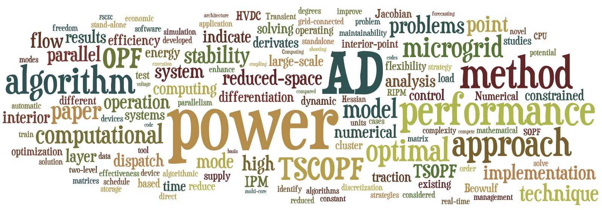

研究工作
关键字
研究兴趣
- 电力系统稳定与控制
- 暂态稳定与短期电压稳定
- 高压直流输电系统（HVDC）与柔性输电系统（FACTS）的建模、仿真与优化
- 稳定约束最优潮流
- 数值分析与优化
- 微分与代数方程组(DAE)
- 非线性规划算法（NLP）
- 自动微分技术（AD） - 高性能计算技术（HPC）
- 大规模并行计算算法
- 基于多核CPU的并行计算集群
- 图形处理器（GPU）通用计算
研究经历
2013.12 – 现在, 博士研究生
浙江大学, 杭州, 中国. 导师: 江全元教授
• 稳定约束最优潮流在实际省级电网中的应用
• 大规模动态优化算法的改进研究
• 基于多核CPU和GPU的异构并行计算
• 大规模并行算法中的多层任务分解和负载均衡
2012.8 – 2013.11, 国家公派联合培养博士研究生
爱荷华州立大学, 艾姆斯, 美国. 导师: Venkataramana Ajjarapu教授
• 基于随机化稳定约束最优潮流模型的预测-校正控制算法
• 基于直接多重内点法的新型动态优化算法
• 电力市场中无功备用与稳定约束分析研究
• 轨迹灵敏度分析及其在电力系统中的应用
2009.8 – 2012.7, 博士研究生
浙江大学, 杭州, 中国. 导师: 江全元教授
• 暂态稳定约束最优潮流(TSCOPF)
• 基于简约空间内点法（RIPM）的新型非线性规划算法
• 基于多核CPU的Beowulf集群并行计算技术
• 负责规划、组建和维护含有18个节点、200个CPU核心的实验室并行计算平台
2009.7 – 2009.8, 研究生实习
中铁电气化勘测设计研究院, 天津, 中国. 导师: 苏鹏程
• 高速铁路牵引供电系统及其电能质量评估
• 铁路电气化系统电磁-机电暂态混合仿真
2009.2 – 2009.6, 本科生毕业设计
浙江大学, 杭州, 中国. 导师: 江全元教授
• “电力系统最优潮流的并行计算”
• 研究多种并行线性解法器用于高效求解最优潮流问题
• 被评为“2009届浙江大学本科生百篇特优毕业论文”
2007.6 – 2009.6, 本科生
浙江大学, 杭州, 中国. 导师: 江全元教授
• 自动微分技术（AD）及其在电力系统中的应用
• 含高压直流输电系统（HVDC）与柔性输电系统（FACTS）的最优潮流
2008.10 – 2010.6, 国家大学生创新性实验计划项目
浙江大学, 杭州, 中国. 导师: 江全元教授
• “基于PC集群的分布式微网能量管理系统的研究”
• 基于日前计划与实时调度双层协调的微网经济运行优化算法
2008.7 – 2008.9, 本科生实习
白山发电厂, 桦甸, 中国. 导师: 姜相东
• 自动发电控制（AGC）系统与机组低频自启动策略
• 企业内部网络基础设施升级与改造
2007.5 – 2008.5, 浙江大学大学生科研训练计划(SRTP)
浙江大学, 杭州, 中国. 导师: 姚缨英教授
• “音频信号处理中综合试验平台”
• 在项目结题中被评为“优秀”